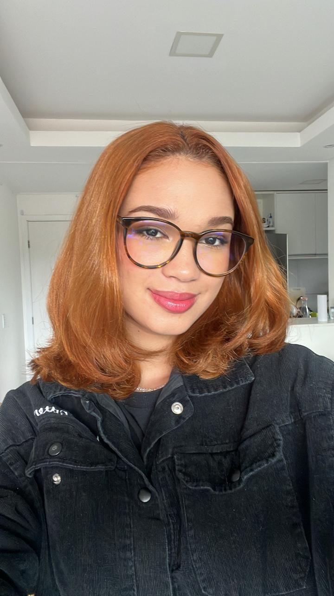

Emily Raquel Marques
Graduanda em Análise e Desenvolvimento de Sistemas na Cesar School
SOBRE MIM
Olá, me chamo Emily, tenho 19 naos. Atualmente estou cursando Análise e Desenvolvimento de Sistemas na CESAR School e trabalho com Design como freelancer para algumas empresas e esabelecimentos.
ACADÊMICO
Técnico em Desemvolvimento de Sistemas 2020 - 2023
Escola Técnica Estadual Porto Digital
Graduação em Análise e Desenvolvimento de Sitemas 2025 - 2027
CESAR School
HABILIDADES
- Habilidades Técnicas: Noções de python, HTML e CSS
- Idiomas:Inglês nível B1
- Habilidades Interpessoais: Comunicação, Trabalho em Equipe, Resolução de Problemas, Liderança.